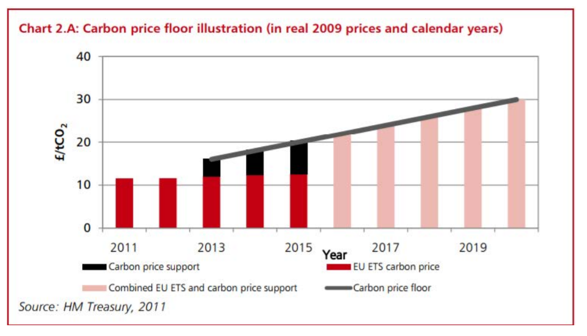

32 Cap and Trade
Tooze Memo
Carbon pricing is the economists’ preferred weapon to address the climate crisis. Two methods are proposed: (1) tax or (2) “cap and trade”.
Carbon taxes curb emissions by raising their price. The logic is simple and the problems are obvious. Taxes are unpopular. And you have to make sure to pick the right rate. If you do manage to get acceptance and get the tax right, the effect can be powerful. It is especially effective if you can fix an escalating tax rate that provides an incentive to long-term investment in emissions saving. In the UK, an adjustable tax was introduced in 2013 to establish a rising minimum price floor for carbon emissions from power generation. The foreseeable escalation of costs accelerated the rapid end of coal-burning in the UK.

Cap and trade systems are more complex. The authorities issue permits for a given amount of pollution. These are auctioned off to the highest bidder and a market is created in which polluters can trade permits amongst themselves. Rather than imposing a tax the government creates a kind of currency - emissions certificates - and a market for those certificates. To many economists since the 1980s, this has looked like the best solution. Rather than imposing taxes it creates an asset and allows a market mechanism to determine who is willing to pay to continue polluting. The absolute level of pollution is capped and can be progressively adjusted downwards. It is, however, hedged with problems.
Above all if the aim of the game in adopting cap and trade is to avoid the painful politics of taxation, cap and trade more often than not proves to be a dead end. Rather than deciding on the tax rate you have to decide on the quantity of permits. If you dodge that question and issue them for free, the system becomes an absurd and counterproductive shell game. It discredits the entire model.
Europe has long taxed energy. In the 1990s after the first major climate conferences, the EU attempted to agree on a carbon tax, but couldn’t get the deal done. At the urging of American NGOs and key European corporate leaders, the EU opted for a cap and trade system. In political terms, a cap and system that is not a tax has the advantage that the rules of the EU do not require unanimity. Launched in 2005, the EU’s Emissions Trading System was, until China began to roll out its system in 2021, the largest in the world. But, for most of its existence to date, the EU’s Emissions Trading System (ETS) was a sad joke. Far too many permits were handed out free by national governments. Prices were prone to crashing. When they did not, polluters could earn a subsidy by selling their free certificates to other polluters. The amount of revenue collected was derisory.
However, things have begun to change. Brussels now runs the EU ETS with a much firmer hand. The supply of certificates has tightened. In electricity generation all permits are auctioned and prices have surged to an appreciable 50 euros per ton of emissions. This will end coal-fired power generation whether the Poles like it or not.
The US, by contrast, has never taxed energy heavily. In the 1990s Clinton’s effort to pass a carbon tax failed. In 2009-2010 Congressional opposition defeated the Obama administration’s somewhat lack luster effort at cap and trade. Al Gore’s Inconvenient Truth may have been a global hit, but even with elaborate preparation there simply were not the votes. As a result, the Green New Deal proposed by the climate left dropped any mention of carbon pricing in favor of investment and regulation. The Biden administration has continued in that vein. Robinson Meyer of The Atlantic recently published an obituary for carbon taxes in the US.
The two approaches could and should coexist side by side. But a serious push towards decarbonization, however you do it, involves up-front costs. To avoid outsourcing and undercutting from imported high-carbon competition, national efforts have to be shielded by carbon border adjustments - tariffs on high carbon imports-
The contribution which most comprehensively sums up the critique of carbon pricing that is prevalent in the US today is Danny Cullenward and David G. Victor’s timely book, Making Climate Policy Work. Their sophisticated argument, based in political science and political economy, deserves a hearing on both sides of the Atlantic.
Cullenward is an economist, lawyer and activist attached to (carbon)plan noted for critical work on carbon offset schemes. Victor (UC San Diego) is an IPCC veteran and a well-known critic of “top down” efforts at carbon regulation. He champions the kind of “bottom up” model of climate policy that triumphed in Paris in 2015.
Rather than seeking to distribute an overall global carbon budget from the top down, which triggers an acrimonious zero-sum distributional battle, the Paris agreement adopted a more minimal approach. All that national governments adhering to the Paris agreement are required to do, is to state their best offer. There is no requirement to achieve consistency and no hard enforcement mechanism. It was this “light touch” model that enabled a truly comprehensive agreement to be stitched together.
Rather than attempting a perfect and comprehensive market solution, they propose that we should focus on devising a set of proposals for industrial policy and regulation to address each of the five major areas of pollution: power generation, industry, transport, buildings and agriculture.
Conceptually, this preference for ad hoc “bottom up” solutions is influenced by Victor’s collaboration with Chuck Sabel and the project of experimental governance that Sabel has been developing with his long-time writing partner Jonathan Zeitlin. Rather than grand schematics like a global carbon budget or a universal carbon price they focus on the need to break down big problems into smaller more manageable challenges that can be addressed by pragmatic and adaptive experimentation.
The knock on the “bottom up” approach is that it does not produce an adequate overall package to address the global crisis. The knock on experimental governance is that it offers a sugar-coated account of the operation of power. The result is that Cullenward and Victor’s approach is liable to be dismissed as inadequately forceful and comprehensive.
The Paris agreement was the first attempt to get a comprehensive deal. But that does not mean that the work is done. Rather the opposite. The first round of inadequate national commitments was simply the starting point. The point of the Paris agreement is not the initial deal, but the iterative process it sets in motion
The spirit of the Paris deal was not to argue over a finished scheme, but to generate collective movement in the right direction.
Contrary to the suggestion that this iterative and experimental approach to governance is naive about power, it was chosen precisely out of an acute awareness of the limits that the existing distribution of power and influence impose on any possible agreement.
Read Cullenward and Victor between the lines and it reads like Machiavelli - as disillusioned, realistic, situated advice to a climate prince. Their critique of carbon pricing, starts precisely from where the locus of decision-making is. They seek to be realistic about what might motivate action and what might serve as a check. For that reason they actually favor carbon taxation as a simple and direct means of shifting resource allocations. Their criticism is directed towards cap and trade and the fantasy of markets.
Their book is a powerful critique of the neoliberal ideology that has sustained the carbon market idea in the North Atlantic.
The idea of carbon trading as an idea is favored by “academic and policy elites”, Cullenward and Victor argue. They may be well-intentioned but in practice their support for cap and trade serves to uphold the disastrous status quo.
They describe cap and trade carbon markets as “Potemkin markets” - arrangements that look like markets but in fact fail to exercise any meaningful discipline.
The idea of comprehensive carbon pricing is a dangerous fantasy, a mirage - a shimmering, promising illusion on the far horizon that lures desperate traveler to their doom.
There is a certain sort of economist that cannot resist a cute idea, a gimmick, a clever incentive scheme, a device, a mechanism. Cap and trade is that kind of idea.
Carbon market proposals fail to work systematically because interest groups manipulate them. They also fail because the very idea is a simplistic fantasy.
One is reminded of Karl Polanyi’s famous critique of 19th-century classical economics not as a realistic description of the world, but as a draconian project of remaking that world in its simplified image.
There is, in fact, no such thing as “the” market. What there are are distinct sectors each with its own specific logic, each with its particular pattern of fossil fuel use. Rather than attempting to create a single overarching carbon price, what we need, to drive decarbonization are a series of precise interventions, each following the logic of a particular sector.
EU ETS
Cullenward and Victor are duly critical of the failed early stages of the EU’s ETS. They also alert to the risks of extending the carbon pricing model to new areas - motor vehicles and domestic fuels - as the Commission proposes. But they recognize that in the EU, carbon pricing has a unique and propitious political backdrop. They also recognize the institutional learning that is owed to the decade-long engagement by the EU’s institutions. Measures such as the Market Stability Reserve introduced in 2019, which drain excess certificates from the system, exercise a steadying upward pressure on prices. The system can be made to work much better.
Deep Note
What is exposed in the debates about decarbonization is ultimately the question of what actually drives the accumulation of capital, what makes the economy go, what the productive machinery actually is.
Tooze (2021) The Mirage of Carbon Markets?
Böll Stiftung (2021) Was von CO2-Preisen zu erwarten ist – und was nicht